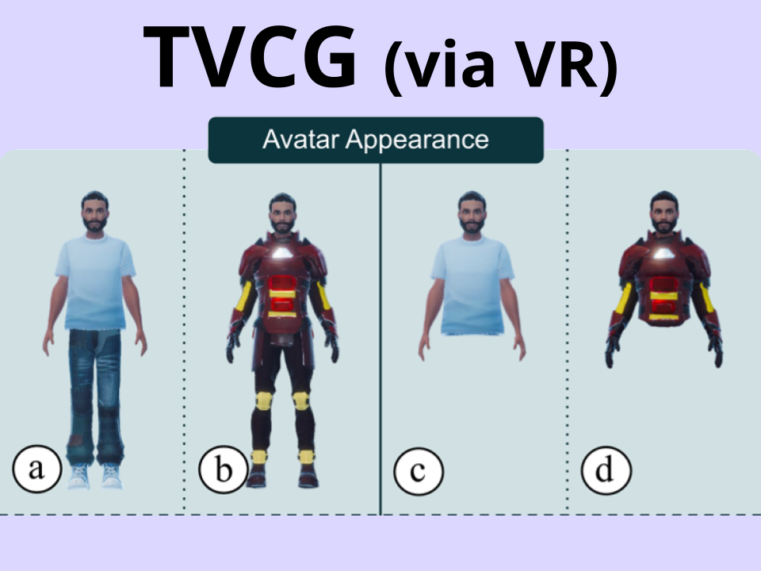
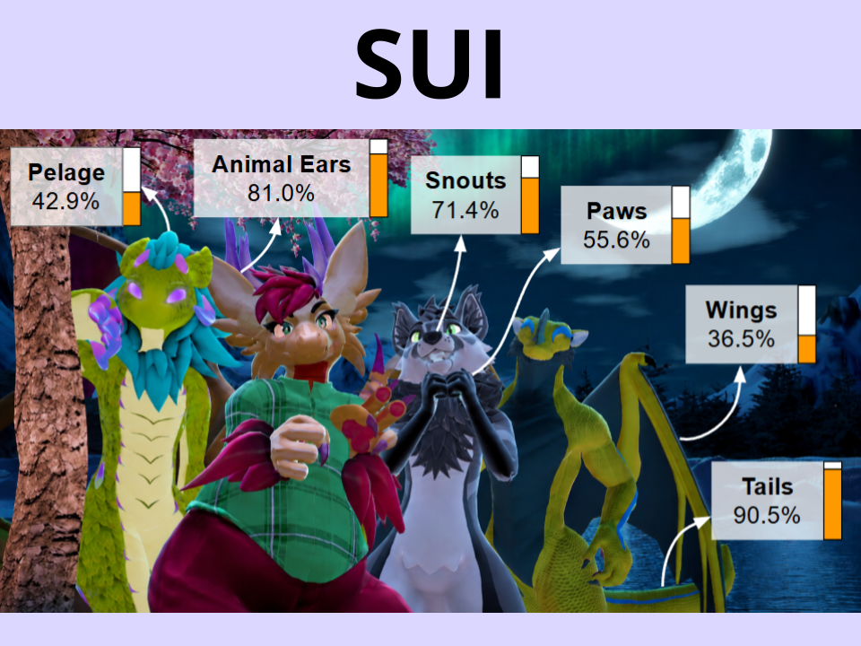
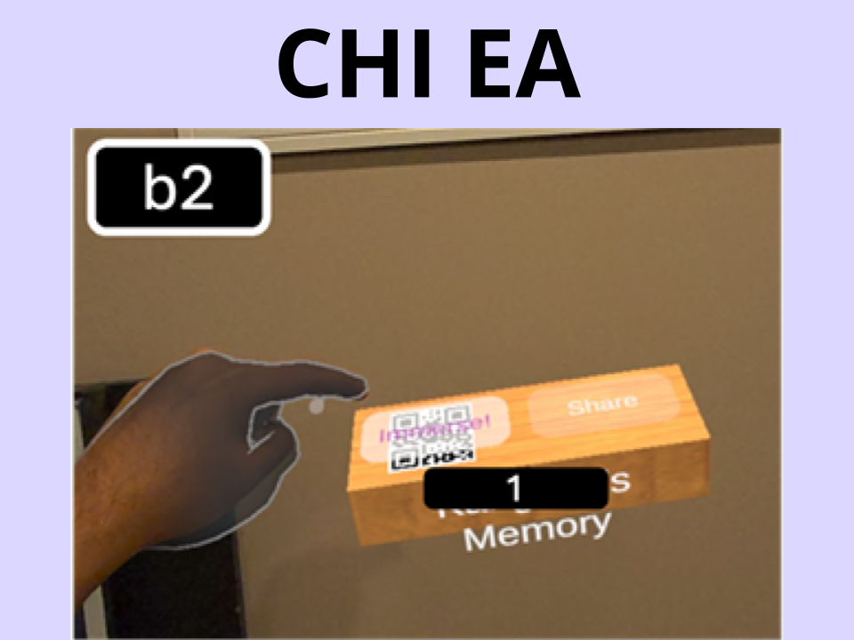
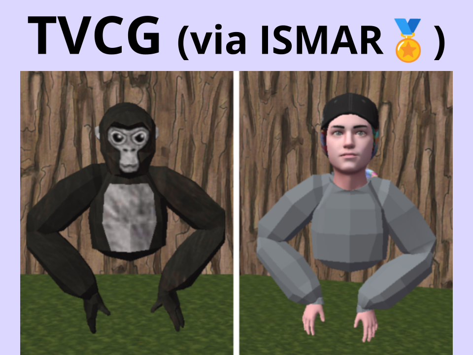
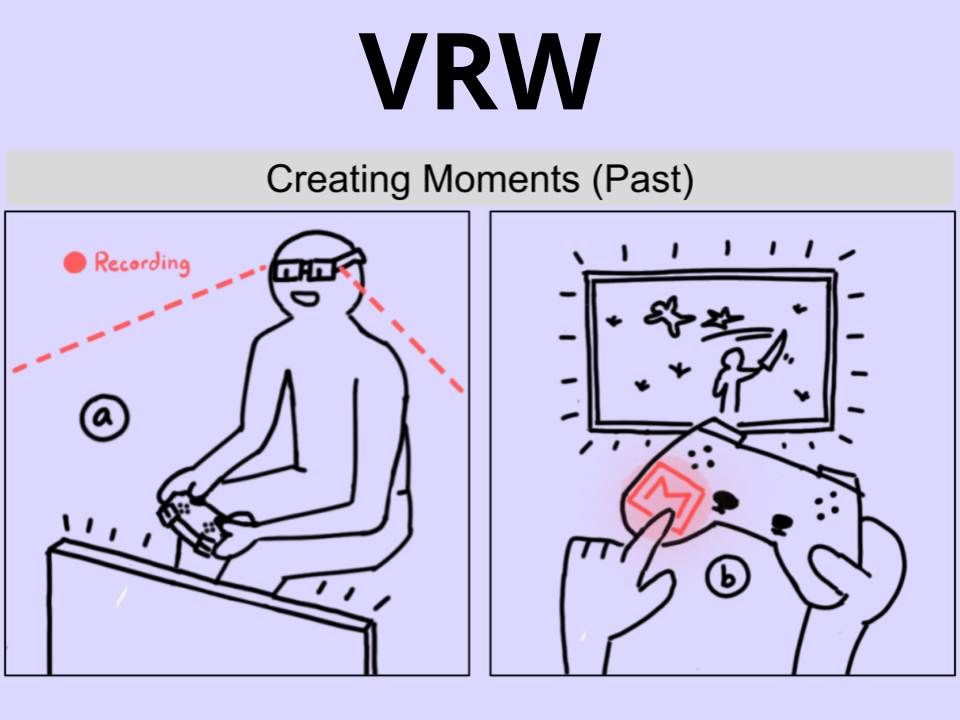
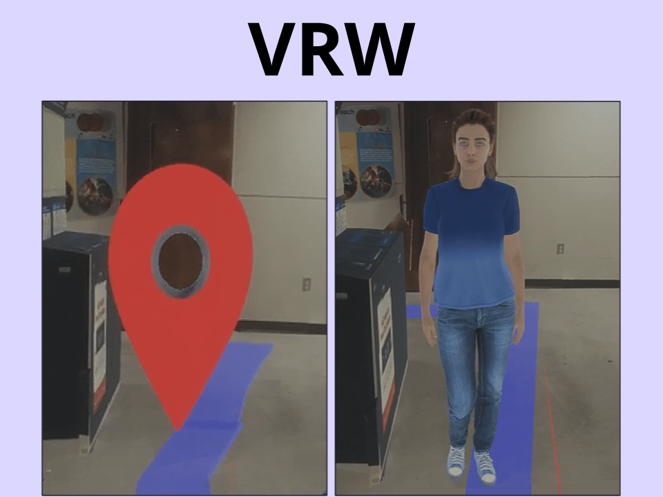
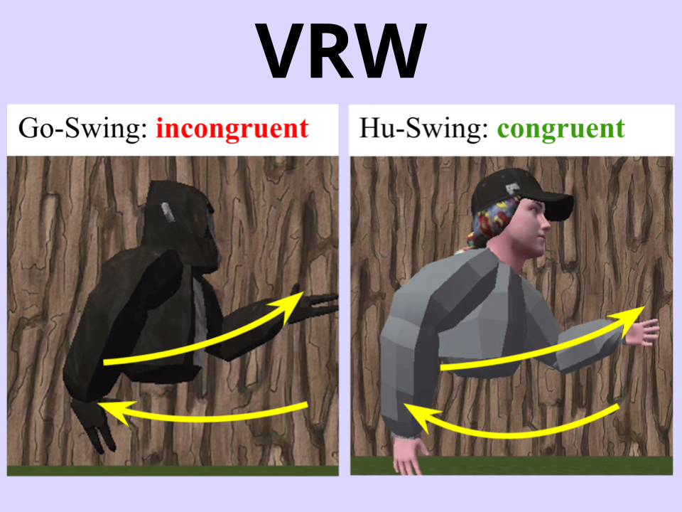
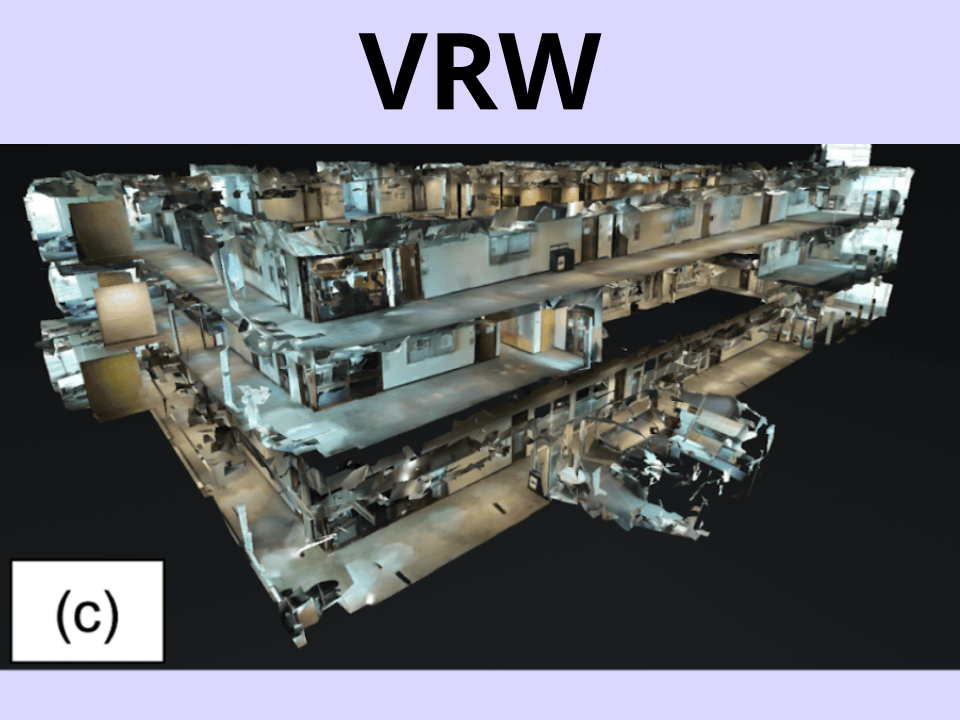

Ph.D. Student in Computer Science
I am a Ph.D. student in Computer Science at Drexel University, Philadelphia, USA. I am advised by Dr. Tiffany D. Do as a member of the DIVA Lab. My current research is in virtual embodiment, social VR, and haptic perception, but spans across other areas of extended reality (XR/AR/VR), all within the broader scope of human-centered computing (HCC).
I am trained in designing and implementing AR/VR systems, and conducting user studies to extract insights on how next-generation computing interfaces shape human perception and behavior. My work has been published at highly selective journals such as IEEE TVCG, and has been presented at flagship conferences such as IEEE VR, IEEE ISMAR, and ACM CHI.
I graduated with a B.Sc. with First-Class Honours in Computer Science from the University of Calgary, in Canada. Throughout my time there, I did research in avatars under the supervision of Dr. Kangsoo Kim as a member of the HXI Lab.


Influence of Avatar Appearance and Target Distance on Locomotion Method Selection in Virtual Reality
Omar A. Khan, Junyeong Kum, Hyeongil Nam, Myungho Lee, Kangsoo Kim
IEEE Transactions on Visualization and Computer Graphics (TVCG), vol. 32, no. 5, pp. 4668-4677, 2026.
Acceptance rate: 20%
Impact Factor: 6.5

🏅Honorable Mention for Best Paper Award at IEEE ISMAR 2025 (Top 3%)
Impact of Avatar-Locomotion Congruence on User Experience and Identification in Virtual Reality
Omar Khan, Hyeongil Nam, Kangsoo Kim
IEEE Transactions on Visualization and Computer Graphics (TVCG), vol. 31, no. 11, pp. 9878–9888, 2025.
Acceptance rate: 8%
Impact Factor: 6.5

Exploring Experiential Differences Between Virtual and Physical Memory-Linked Objects in Extended Reality
Zaid Ahmed, Omar A. Khan, Hyeongil Nam, Kangsoo Kim
Proceedings of ACM CHI Conference Extended Abstracts on Human Factors in Computing Systems (CHI EA), no. 269, pp. 1-5, 2026
Acceptance rate: 38%
ICORE conf. rank: A*

TangibleMoments: Embedding XR Memories onto Physical Objects
Omar Khan, Zaid Ahmed, Hyeongil Nam, Kangsoo Kim
Proceedings of the IEEE Conference on Virtual Reality and 3D User Interfaces Abstracts and Workshops (IEEE VRW): 1st International Workshop on Spatial Memory in XR (XRMemory), pp. 1147–1153, 2025.

Investigating Visual Guide Cues in VR: Impacts of Virtual Humans and Symbol-Based Navigation on Real-World Performance and Experience
Omar Khan, Anh Nguyen, Hyeongil Nam, Kangsoo Kim
Proceedings of the IEEE Conference on Virtual Reality and 3D User Interfaces Abstracts and Workshops (IEEE VRW): 1st International Workshop on Real and Virtual Spaces Influences (ReViSI), pp. 504–509, 2025.


Exploring the Impact of Virtual Human and Symbol-Based Guide Cues in Immersive VR on Real-World Navigation Experience
Omar Khan, Anh Nguyen, Michael Francis, Kangsoo Kim
Proceedings of the IEEE Conference on Virtual Reality and 3D User Interfaces Abstracts and Workshops (IEEE VRW), pp. 883–884, 2024.